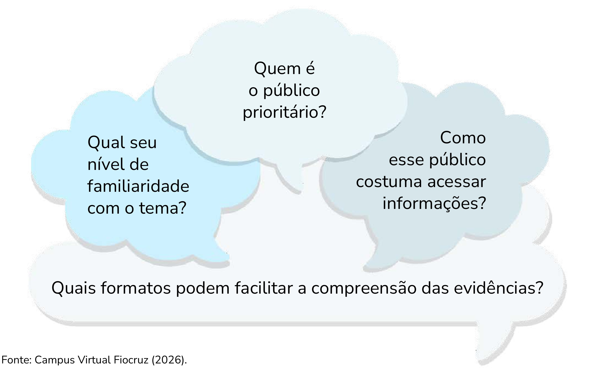

Módulo 4 | Aula 3
Comunicação de Evidências na Prática e a Experiência do NIPPIS
Planejamento de produtos comunicacionais
O desenvolvimento de produtos comunicacionais envolve diferentes etapas de planejamento. Organizar esse processo ajuda a garantir que as evidências sejam comunicadas de forma clara, acessível e adequada aos objetivos e públicos envolvidos. Que tal conhecer o passo a passo para desenvolver produtos comunicacionais?
PASSO 1 — Definir o Objetivo da Comunicação
Antes de produzir qualquer conteúdo, é importante identificar o que se deseja comunicar e qual resultado se espera alcançar. O objetivo da comunicação influencia diretamente a escolha da linguagem, do formato, dos canais e das estratégias utilizadas.
Conheça alguns objetivos comuns na comunicação de evidências científicas:
Objetivo voltado à apresentação de informações, dados ou evidências de forma clara e acessível para determinado público.
Exemplo: divulgar resultados de uma pesquisa sobre cobertura vacinal por meio de um infográfico.
Busca chamar atenção para um problema social, de saúde ou política pública, estimulando reflexão e engajamento dos públicos.
Exemplo: produzir um vídeo curto sobre os impactos da desinformação em saúde nas redes sociais.
Tem como objetivo oferecer informações estratégicas e organizadas para auxiliar processos de tomada de decisão.
Exemplo: desenvolver um policy brief para gestores sobre estratégias de prevenção de doenças.
Busca ampliar o acesso da população a evidências científicas, fortalecendo participação, diálogo e controle social das políticas públicas.
Exemplo: criar materiais em linguagem simples para apoiar debates em conferências e conselhos de saúde.
Objetivo voltado à ampliação da circulação do conhecimento científico para diferentes públicos e contextos.
Exemplo: produzir conteúdo para redes sociais apresentando os principais resultados de uma pesquisa científica.
PASSO 2 — Identificar o público e mapear interlocutores estratégicos
Compreender quem irá acessar a informação é etapa fundamental para definir linguagem, formatos, estratégias e canais de comunicação. Diferentes públicos possuem necessidades informacionais, repertórios e formas distintas de acessar e utilizar evidências científicas.
Algumas perguntas que podem orientar essa etapa:

Fonte: Campus Virtual Fiocruz (2026).
Além de identificar os públicos diretamente envolvidos, também é importante mapear os diferentes atores sociais que podem influenciar a circulação, o alcance e o uso das evidências científicas. Isso inclui reconhecer interlocutores estratégicos, possíveis parceiros e grupos ou interesses que podem se opor às informações divulgadas.
Portanto, comunicar evidências científicas também envolve compreender os contextos sociais, políticos e institucionais em que essas informações circulam.
Nesse processo, pode ser útil identificar:
- Instituições e organizações que podem apoiar a divulgação das evidências.
- Movimentos sociais e redes que dialogam com o tema.
- Profissionais e influenciadores com potencial de ampliar a circulação das informações.
- Públicos diretamente impactados pela evidência.
- Grupos econômicos, políticos ou ideológicos que possam disputar narrativas ou se posicionar contra determinadas evidências.
Mapear esse cenário ajuda a planejar estratégias de comunicação mais efetivas, identificar possíveis barreiras à circulação das informações e fortalecer ações de disseminação do conhecimento. Também permite antecipar disputas narrativas e compreender como diferentes interesses podem influenciar a recepção das evidências na sociedade e nas políticas públicas. Veja um exemplo: em uma campanha sobre vacinação, gestores públicos, profissionais de saúde e organizações científicas podem atuar como parceiros estratégicos na circulação das evidências. Ao mesmo tempo, grupos desinformativos ou movimentos antivacina podem disputar narrativas e dificultar a circulação de informações confiáveis.
Por isso, identificar públicos e interlocutores estratégicos não significa apenas definir “para quem” comunicar, mas também compreender as relações, disputas e contextos envolvidos na circulação social das evidências científicas.
PASSO 3 — Selecionar a informação e o formato mais adequado
A escolha do produto comunicacional deve considerar os objetivos da comunicação, as características do público e o contexto em que a evidência será utilizada. Diferentes públicos demandam diferentes formatos, linguagens e níveis de aprofundamento das informações.
O quadro a seguir apresenta alguns exemplos de públicos, objetivos da comunicação e possíveis produtos utilizados em estratégias de Tradução do Conhecimento.
| Público | Objetivos da comunicação | Possíveis produtos comunicacionais |
|---|---|---|
| Gestores e formuladores de políticas | • Apoiar tomada de decisão. • Apresentar evidências de forma rápida e estratégica. • Subsidiar planejamento e implementação de políticas públicas. | • Sínteses de evidências para políticas. • Relatórios executivos. • Apresentações institucionais. • Infográficos com dados estratégicos. |
| Profissionais e pesquisadores | • Compartilhar evidências científicas. • Apoiar práticas profissionais. • Divulgar resultados de pesquisas. • Fortalecer intercâmbio técnico e científico. | • Artigos científicos. • Protocolos. • Guias rápidos. • Webinars. • Vídeos explicativos. • Relatórios técnicos. • Podcasts temáticos. |
| Sociedade civil e usuários | • Ampliar acesso à informação. • Promover participação social. • Sensibilizar sobre temas de saúde e políticas públicas. • Enfrentar desinformação. | • Cartilhas. • Vídeos curtos. • Podcasts. • Infográficos. • Cards para redes sociais. • Materiais em linguagem simples. • Conteúdos multimídia acessíveis. |
Fonte: Elaborado pela autora e adaptado pelo Campus Virtual Fiocruz (2026).
Um mesmo conteúdo científico pode ser adaptado em diferentes formatos para dialogar com públicos distintos, ampliando o alcance e o potencial de uso das evidências. Além disso, objetivos, estratégias e produtos comunicacionais podem ser utilizados de forma combinada e criativa, considerando os contextos, plataformas e necessidades dos públicos envolvidos.
É importante dialogar e validar os conteúdos com os potenciais interlocutores ao longo do processo de construção dos produtos comunicacionais. Essa troca pode ajudar a identificar necessidades informacionais, adequar linguagens, fortalecer a acessibilidade e ampliar as possibilidades de circulação e utilização das evidências.
PASSO 4 — Planejar linguagem e acessibilidade
Após definir os objetivos, os públicos e os formatos da comunicação, é importante planejar como as informações serão apresentadas para garantir clareza, inclusão e acessibilidade.
Essa etapa envolve pensar não apenas no conteúdo, mas também na forma como diferentes pessoas irão acessar, compreender e interagir com os produtos comunicacionais. Estratégias de acessibilidade ajudam a ampliar o alcance das evidências e fortalecer o acesso democrático à informação.
Conheça a seguir alguns recursos e estratégias que podem tornar a comunicação mais acessível.
Linguagem simples
Consiste em apresentar informações de forma clara, objetiva e compreensível para diferentes públicos, evitando excesso de termos técnicos e frases complexas.
Organização visual das informações
Refere-se à forma como textos, imagens, títulos, cores e elementos gráficos são organizados para facilitar leitura e compreensão.
Legendas e audiodescrição
Legendas tornam conteúdos audiovisuais mais acessíveis para pessoas com deficiência auditiva ou surdez. Já a audiodescrição descreve elementos visuais importantes para pessoas com deficiência visual.
Libras
A Língua Brasileira de Sinais (Libras) amplia o acesso de pessoas com surdez às informações e conteúdos comunicacionais.
Compatibilidade com dispositivos móveis
Os conteúdos devem ser planejados para funcionar adequadamente em celulares, tablets e diferentes tamanhos de tela.
PASSO 5 — Verificar Qualidade e Credibilidade das Informações
Antes da divulgação, é fundamental revisar as evidências utilizadas, conferir fontes e garantir clareza às informações apresentadas. Também é importante verificar:
- Atualização dos dados.
- Coerência das mensagens.
- Correção das referências e informações técnicas.
A comunicação das evidências é responsabilidade apenas dos comunicadores?
A comunicação de evidências é mais efetiva quando pesquisadores e profissionais da comunicação trabalham em parceria. Enquanto os pesquisadores contribuem com o conhecimento técnico, a interpretação dos resultados e a validação científica das informações, os comunicadores colaboram na adaptação dos conteúdos para diferentes públicos, formatos e plataformas.
Esse processo exige diálogo contínuo. Produzir um vídeo, podcast, infográfico, cartilha ou conteúdo para redes sociais não significa apenas “traduzir” um artigo científico, mas repensar como as informações serão apresentadas sem comprometer sua qualidade e precisão. Por isso, é fundamental que pesquisadores acompanhem e revisem os materiais produzidos ao longo de todo o processo, contribuindo para verificar a fidelidade das informações, esclarecer dúvidas e identificar possíveis simplificações inadequadas.
Mais do que uma etapa de validação final, a construção conjunta entre comunicação e pesquisa favorece a produção de conteúdos mais claros, confiáveis e adequados aos objetivos da Tradução do Conhecimento, ampliando as possibilidades de circulação e uso social das evidências.
PASSO 6 — Definir estratégias de circulação
Após a produção do conteúdo é necessário pensar como ele será divulgado e compartilhado, o que inclui:
- Escolha das plataformas digitais.
- Redes sociais.
- Sites institucionais.
- Eventos.
- Aplicativos de mensagens.
- Parcerias com instituições e movimentos sociais.
Antes de criar estratégias de divulgação, vale a pena conhecer e dialogar com as assessorias de comunicação das instituições às quais a pesquisa está vinculada. Universidades, institutos de pesquisa, secretarias e organizações costumam contar com canais já consolidados, como sites, portais de notícias, newsletters, redes sociais, podcasts, revistas institucionais e listas de distribuição.
Os profissionais de comunicação dessas instituições podem apoiar a divulgação dos resultados da pesquisa. Além disso, muitas assessorias mantêm relacionamento com veículos de imprensa e jornalistas, funcionando como ponte importante entre a pesquisa e os meios de comunicação externos.
Você realmente precisa criar um perfil nas redes sociais?
As redes sociais podem ser importantes canais de circulação de evidências, mas a criação de novos perfis exige planejamento e compromisso de longo prazo. Por isso, antes de abrir uma conta em uma nova plataforma, é importante refletir sobre sua sustentabilidade.
Algumas perguntas podem ajudar nessa decisão: quem será responsável por produzir os conteúdos? Quem irá responder às mensagens e interagir com o público? Há recursos financeiros e humanos para manter o perfil atualizado? Existe uma estratégia de comunicação para além da criação da conta? O projeto possui duração e escopo que justifiquem a construção de uma audiência própria?
Em muitos casos, construir um público do zero pode demandar tempo, recursos e esforço contínuo. Sendo assim, pode ser mais estratégico estabelecer parcerias com perfis institucionais, movimentos sociais, organizações da sociedade civil, influenciadores ou iniciativas que já possuem públicos consolidados e dialogam com os interlocutores que se deseja alcançar.
Mais importante do que estar presente em muitas plataformas é garantir que os conteúdos circulem de forma qualificada, alcancem os públicos prioritários e possam ser mantidos ao longo do tempo.
PASSO 7 — Avaliar alcance e impacto
Sempre que possível, é importante acompanhar como o produto comunicacional circulou e foi utilizado pelo público. Essa avaliação pode ajudar a identificar:
- Alcance do conteúdo.
- Engajamento do público.
- Dificuldades de compreensão.
- Possibilidades de melhoria para futuras produções.
| Público | Produto comunicacional | O que pode ser avaliado? | Possíveis indicadores |
|---|---|---|---|
| Gestores e formuladores de políticas | Síntese de evidências para políticas – Policy briefs. | Uso das informações na gestão. | Feedback de gestores, incorporação das recomendações em planos, programas ou ações. |
| Relatórios executivos. | Acesso e leitura do conteúdo. | Número de acessos, downloads, compartilhamentos institucionais. | |
| Apresentações institucionais. | Interesse e interação do público. | Participação em eventos, perguntas realizadas, solicitações de informações complementares. | |
| Infográficos estratégicos. | Compreensão rápida das informações. | Compartilhamentos, utilização em reuniões, feedback dos usuários. | |
| Profissionais e pesquisadores | Artigos científicos. | Circulação acadêmica. | Número de visualizações, downloads, citações. |
| Protocolos e guias rápidos. | Aplicação prática do conteúdo. | Relatos de uso, adoção em serviços, avaliações dos profissionais. | |
| Relatórios técnicos. | Utilização das recomendações. | Downloads, compartilhamentos institucionais, solicitações de informação. | |
| Webinars. | Alcance e participação. | Número de inscritos, participantes, perguntas enviadas, tempo médio de permanência. | |
| Vídeos explicativos. | Interesse e compreensão. | Visualizações, retenção do público, comentários e compartilhamentos. | |
| Podcasts temáticos. | Alcance e engajamento. | Número de reproduções, seguidores, avaliações e compartilhamentos. | |
| Sociedade civil e usuários | Cartilhas. | Acesso e compreensão do conteúdo. | Downloads, distribuição realizada, avaliações dos leitores. |
| Vídeos curtos. | Alcance e engajamento. | Visualizações, curtidas, comentários, compartilhamentos. | |
| Podcasts. | Interesse do público. | Número de reproduções, tempo de escuta, avaliações dos ouvintes. | |
| Infográficos. | Circulação das informações. | Compartilhamentos, repostagens, uso por organizações parceiras. | |
| Cards para redes sociais. | Alcance nas plataformas digitais. | Impressões, alcance, engajamento e compartilhamentos. |
Fonte: Elaborado pela autora e adaptado pelo Campus Virtual Fiocruz (2026).
Avaliar um produto comunicacional não significa apenas medir números de visualizações, curtidas ou downloads. Dependendo dos objetivos da comunicação, pode ser mais relevante compreender como as informações foram utilizadas, se contribuíram para a tomada de decisão, se favoreceram mudanças de prática ou se ampliaram a participação social.
Sempre que possível, combine indicadores quantitativos (alcance, acessos, downloads e engajamento) com avaliações qualitativas, como entrevistas, questionários, grupos focais e feedback dos públicos envolvidos. Essa combinação permite compreender não apenas quantas pessoas foram alcançadas, mas também quais impactos o produto produziu na prática.